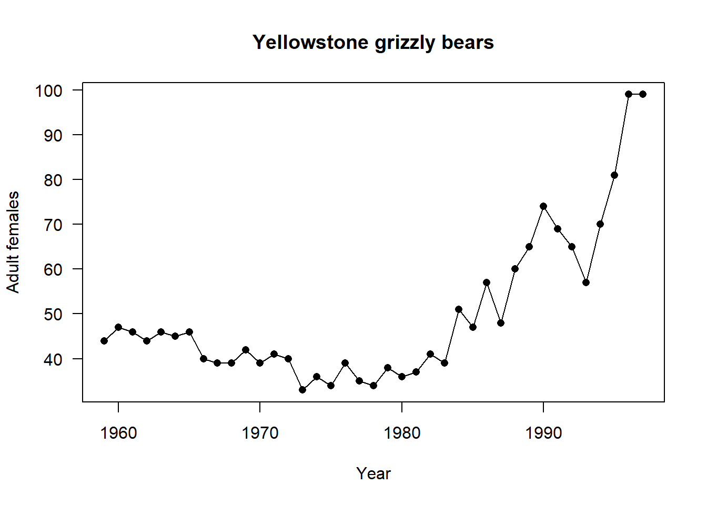
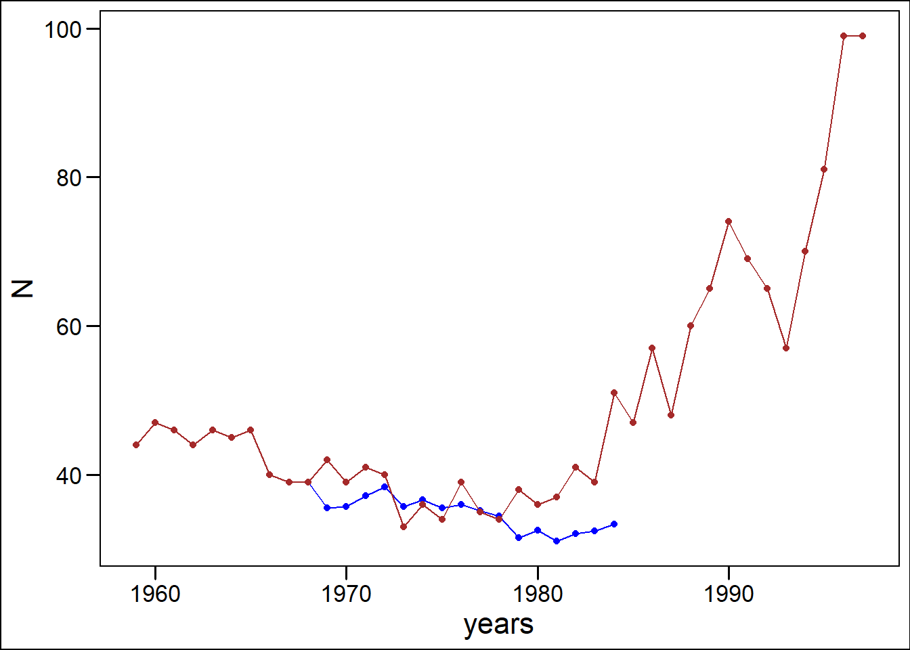

Apply your knowledge about population models to this grizzly bear dataset. Answer the questions and show your code (either in a new script file or in a new Rmarkdown file - you can adapt the original). Save the file and send it to me.
# a # sign means that R does not read this as code.
#install.packages("popbio") #remove the first hash if you do not have popbio installed as a package
library(popbio)data(grizzly)
View(grizzly)
#?grizzly# what is the grizzly data about?
attach(grizzly) ## You need to attach the data so that
#you can use it in the functions that follow
#(otherwise you need to signal to R which data you are using)
plot(year, N, type='o', pch=16, las=1, xlab="Year",
ylab="Adult females", main="Yellowstone grizzly bears") 
Look up the grizzly dataset from the R help (see above ?grizzly will search for the dataset in the helpfiles).
Provide a summary of the grizzly dataset
Their are only female bears in this count. What could you do to make this data more representative of the population?
Do we need more data than just female bears?
Make use of only the first 10 years of the bears dataset to predict the future 17 years. Plot this on the same graph (hint in base R you can add points to a plot using the “points()” fuction)
#Extra credit:: Make the plots look pretty (look at ?ggplot2 for example and search on Google for ggplot2)
grizzly[1:10,]## year N
## 1 1959 44
## 2 1960 47
## 3 1961 46
## 4 1962 44
## 5 1963 46
## 6 1964 45
## 7 1965 46
## 8 1966 40
## 9 1967 39
## 10 1968 39lam<-c(rep("NA",9))
for (i in 2:10){
lam[i]<-grizzly$N[i+1]/grizzly$N[i]
}
lam## [1] "NA" "0.978723404255319" "0.956521739130435"
## [4] "1.04545454545455" "0.978260869565217" "1.02222222222222"
## [7] "0.869565217391304" "0.975" "1"
## [10] "1.07692307692308"mean(as.numeric(lam), na.rm=TRUE) ## Warning in mean(as.numeric(lam), na.rm = TRUE): NAs introduced by coercion## [1] 0.9891857sd(as.numeric(lam), na.rm=TRUE) ## Warning in is.data.frame(x): NAs introduced by coercion## [1] 0.05903223# 0.9891
#0.05903223dim(grizzly)## [1] 39 2N=NULL
N[1]=grizzly$N[10]
for (i in 1:16){
N[i+1]<-rnorm(1,0.9891, 0.05903223)*N[i]
}
N## [1] 39.00000 35.51456 35.70144 37.16086 38.29449 35.69287 36.55879 35.53259
## [9] 35.92049 35.11543 34.39007 31.53991 32.49674 31.07373 32.06179 32.37603
## [17] 33.35816library(tidyverse)
bears<-data.frame(N=N, years=grizzly$year[10:26])
bears %>%
ggplot(aes(years,N))+
geom_point(col="blue")+
geom_line(col="blue")+
geom_point(data=grizzly, aes(year, N), colour="brown")+
geom_line(data=grizzly, aes(year, N), colour="brown")+
ggthemes::theme_base()
detach(grizzly)# remember to detach the data from the session
rm(list=ls())# this cleans your environment - is useful but
#you might want to keep it sometimes - use caution